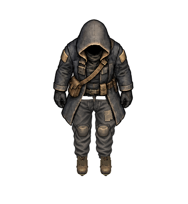
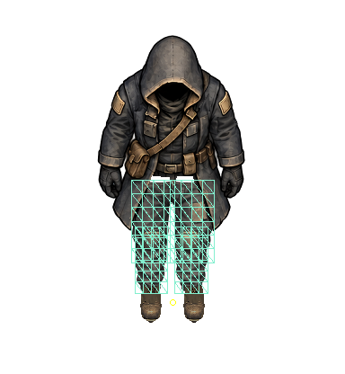

PILOT 01, NOT ACCEPTED. Source-only, not a native scene. New explicit front panels reproduce the tracked baggy target exactly. No old inflated knee-shell geometry. No hidden texture recovery or rotatable-master claim.
Strict original-frame upper identity guard is RED: 157 inherited differences above garment row200, including two opaque-layer pixels whose original alpha is254. Exact copied-layer preservation and full baggy correspondence are separate facts, not a waiver. See defect evidence.
Original neutral
Native logical / half
Tracked baggy target
Native logical / half
Explicit garment UV pilot

Native logical / half
Actual mesh and root

140 vertices, 192 triangles. Alpha contours come from owned material. Rectangle boundaries are parameter domains, not a recovered solid garment silhouette.
Editable controls, not a flattened master
garment.json is the editable model: four owned surfaces, independent per-vertex position=[x,up] and uv=[u,v], explicit triangle topology, material dimensions and render order. Change these arrays and run python -B render.py. Tests mutate real positions and UVs and verify changed output and unchanged unrelated parts. Renderer / Tests / Exact provenance / Method and limits.
Root (192,336) in the 384x416 source canvas. Six source pixels per logical point. Front projection: screen x = root x + position x, screen y = root y - position up. Root is registration, not the lowest visible sole pixel. No new contact shadow or collision geometry.